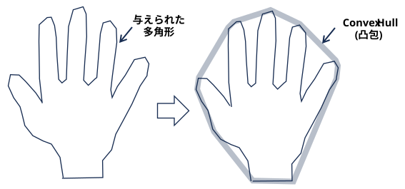
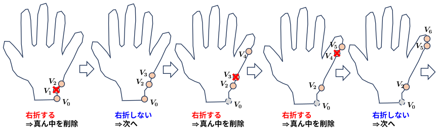
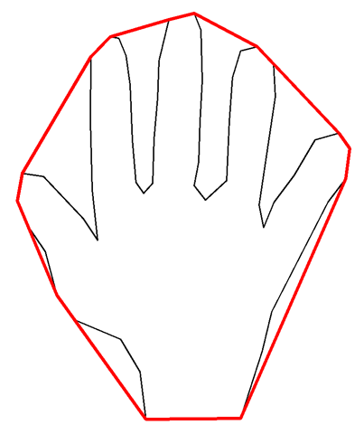

与えられた多角形を含む凸な多角形を求める問題 （タスク）

アルゴリズム提案 → バグ指摘 → アルゴリズム提案 → バグ指摘 → ・・・ の歴史だった･･･
OpenCV は 1982年の不正解アルゴリズムを使っている模様･･･
(AIモードによれば)
Jack Sklanskyが1982年に提案したオリジナルのアルゴリズムは、特定の複雑な多角形（自己交差がある場合など）に対して正しく動作しない例外ケースが存在することが後に指摘されています。しかし、OpenCVの実装では内部的にこれらの例外パターンが発生しないよう対策（事前に点をソートする処理など）が組み込まれており、実用上は安定して高速な凸包を計算できるようになっています。
とのこと。
単純多角形に対する線形時間凸包アルゴリズムの歴史 に経緯が記されていたので以下に引用する。（なぜか ブラウザで翻訳できず･･･)
1978年までに、点の集合に対する凸包を求める計算量はΩ(n log n)であることが知られており[2]、それを実現する単純なアルゴリズムも提示されていました。当然ながら、こうしたアルゴリズムを用いれば、すべての頂点の座標のみを考慮することで、任意の多角形の凸包を求めることが可能です。しかし、単純多角形が持つ構造を利用すれば、凸包を求める際の計算量を削減するのに十分な情報を得られるのではないか、と考えるのは妥当なことと思われました。
線形時間アルゴリズムとして最初に提案されたのは、1972年のSklanskyによるもの[1]でした。それは簡潔かつ洗練されたものでしたが、残念ながら誤りを含んでいました。最初に正当なアルゴリズムを提示したのは、1979年のMcCallumとAvis[3]です。現在、「最良」のアルゴリズムとして一般に認められているのは、1987年のMelkmanによるもの[19]です。このアルゴリズムを凌ぐものが現れる可能性は低いと考えられます。
私が見つけたアルゴリズムのリストを、公開日順（時系列）に以下に示します。
1972 Sklansky: 不正解
1975 Shamos: 不正解
1979 McCallum , Avis: 正解
1980 Kim: 不正解
1982 Sklansky: 不正解
1983 Lee: 正解
1983 Graham , Yao: 正解
1983 ElGindy, Avis , Toussaint: 正解
1983 Ghosh , Shyamasundar : 不正解
1984 Bhattacharya , ElGindy: 正解
1985 Preparata and Shamos: 正解
1985 Orlowski: 正解
1986 Shin , Woo: 正解
1986 Werner: 不正解
1987 Melkman: 正解
1989 Chen: 不正解
1972年: Sklanskyが「単純多角形の凸包を \(O(n)\) で解ける画期的な方法」として発表。
数ヶ月後: 研究者のGodfried Toussaintらにより、「特定のくぼみ（凹み）を持つ複雑な多角形では、正しく動作しないケース（反例）」が示され、アルゴリズムが不完全であることが証明された。
アルゴリズム自体は不完全だったが、「3つの頂点の方向を見て進退を決める」というアプローチ（グラハム・スキャンなどに近い概念）はその後の幾何学アルゴリズムの基礎となった、とのこと。

OpenCV の cv2.convexHull で凸包作成を試すことができる。
(data/task_convex_hull/src/test_convexhull.py)
import numpy as np
import cv2
SCREEN_WIDTH = 1920
SCREEN_HEIGHT = 1024
points = np.array([[323, 932],
[310, 827],
[267, 755],
[167, 713],
[126, 658],
:
[766, 400],
[727, 451],
[602, 694],
[581, 781],
[533, 930]])
screen = np.ones((SCREEN_HEIGHT, SCREEN_WIDTH, 3), np.uint8)
screen *= 255
cv2.drawContours(screen, [points], 0, (0, 0, 0), 2)
hull = cv2.convexHull(points)
cv2.drawContours(screen, [hull], 0, (0, 0, 255), 5)
cv2.imshow('screen', screen)
cv2.waitKey(0)
cv2.destroyAllWindows()
